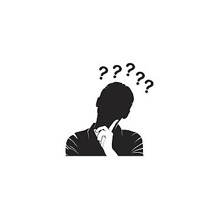

O Raciocínio Lateral e a Arte de Decifrar Enigmas
Descobre como pensar "fora da caixa" pode ajudar-te a resolver enigmas que parecem impossíveis à primeira vista. Treina a tua mente para ver novos caminhos.
Ler Artigo completo →Explora segredos, curiosidades acadêmicas e técnicas para exercitar o cérebro.

Descobre como pensar "fora da caixa" pode ajudar-te a resolver enigmas que parecem impossíveis à primeira vista. Treina a tua mente para ver novos caminhos.
Ler Artigo completo →
Desde a Esfinge de Tebas até aos desafios medievais, os enigmas moldaram a cultura e testaram a inteligência de reis e guerreiros. Conheça as histórias mais fascinantes.
Ler Artigo completo →
Entende como a dinâmica de jogos pode facilitar a retenção de conceitos difíceis de Física, Redes de Computadores e Lógica de Programação de forma divertida.
Ler Artigo completo →